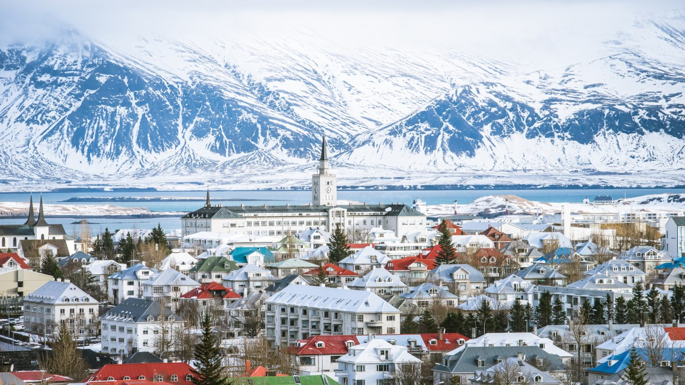

Reykjavik - Capital of Iceland
Reykjavík is the centre of Iceland's cultural, economic, and governmental activity, and is a popular tourist destination among foreigners. It is among the cleanest, greenest, and safest cities in the world

The extreme darkness of Icelandic winter has a few perks. Between September and April, Icelanders are treated to a magnificent natural display: the phenomenon of aurora borealis, or what we commonly call the Northern Lights.

Walking and hiking in Iceland’s diverse landscapes is a fantastic way to experience the island’s unique nature, especially during the long summer days